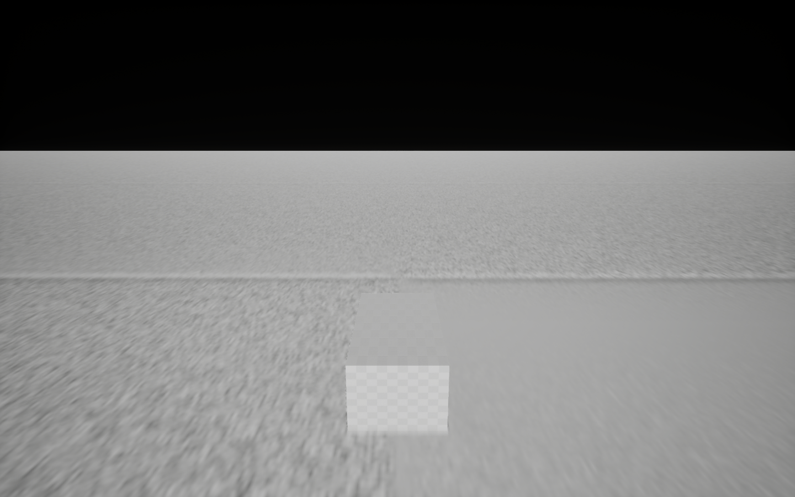
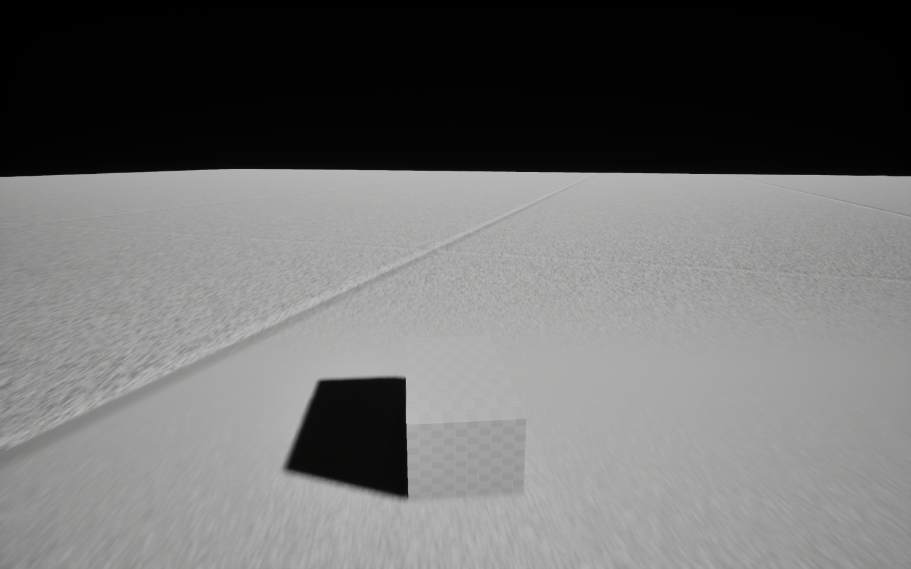
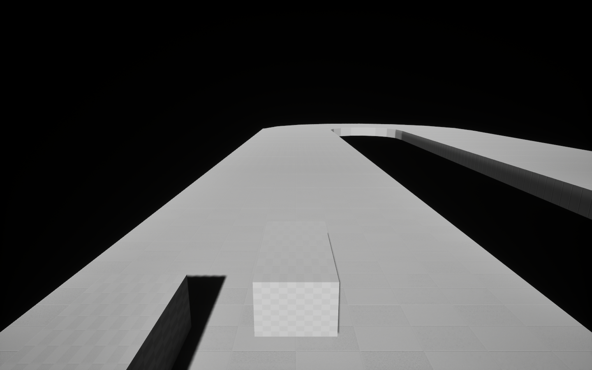
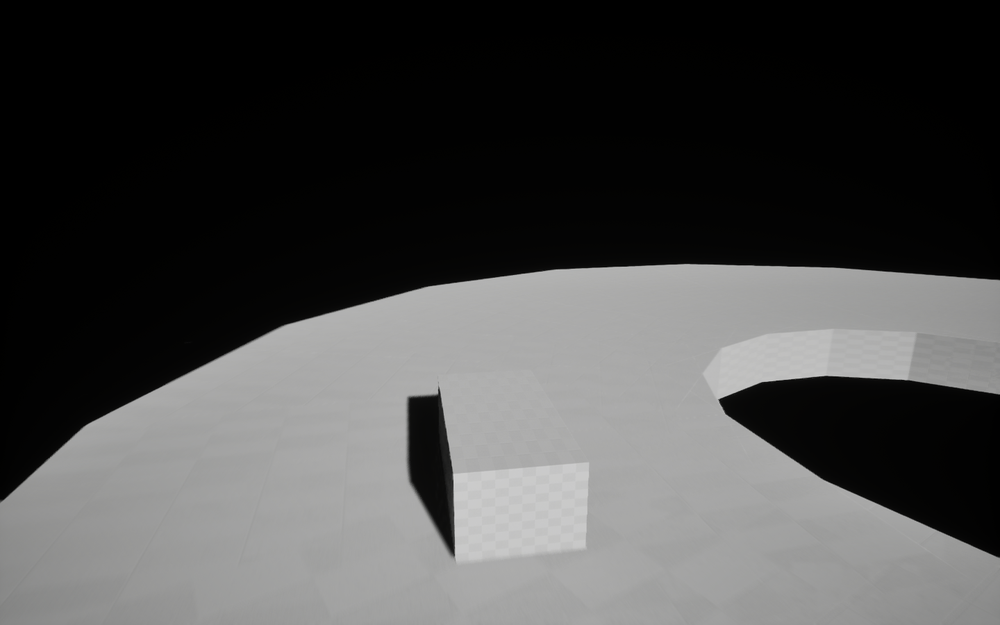
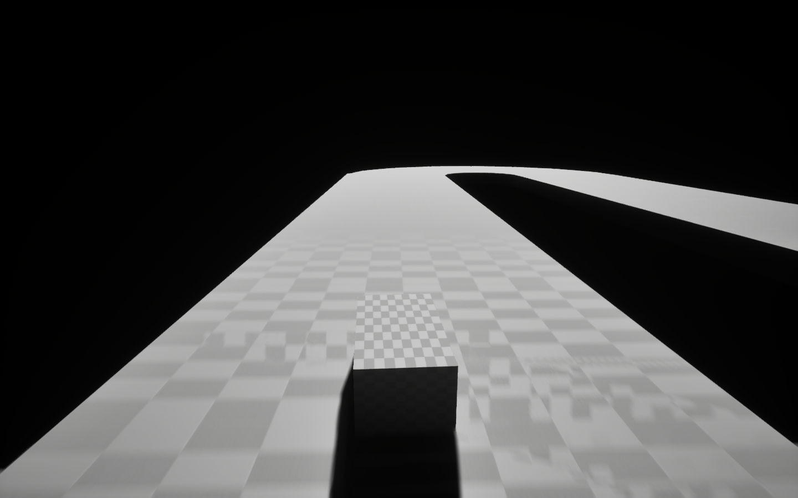

Status
Early development. Tasks 1 through 12 are verified headlessly: project foundation, driving prototype, vehicle dynamics, data-driven architecture, suspension and tires, drivetrain, first circuit with a deterministic lap, race loop with lap state, one AI rival, chase cameras, live race positions, and a multi-car field. Next is Task 13. There is no public release yet.
Project
- Platform: macOS ARM64
- Engine: Unreal Engine 5.8.2
- Renderer: Metal
- Scope: one car, one track, single-player
- Direction: realistic simcade
Engineering
The game owns its vehicle and track architecture in a dedicated module
(Source/RacingGame): a vehicle actor with a public input
path, a data-driven movement component (force model, suspension, tire
forces on a friction circle), an engine/transmission/differential
drivetrain, a runtime-built circuit (road collision, boundaries,
centerline, ordered checkpoints), a race manager (phases, laps, timing),
a pursuit-driving AI rival, look-ahead chase cameras, live race
positions, and a multi-car field on track-derived grid slots, all
covered by automated headless verification. Template vehicle code is retained for
project defaults and
untouched by game code.
See docs/architecture.md
and docs/testing.md.
Verification
| Milestone | Functional gate | Visual verification | Human feel |
|---|---|---|---|
| Task 1: project foundation | PASSED | BLOCKED | NOT VERIFIED |
| Task 2: driving prototype | PASSED | BLOCKED | NOT VERIFIED |
| Task 3: vehicle dynamics | PASSED | BLOCKED | NOT VERIFIED |
| Task 4: vehicle architecture | PASSED | BLOCKED | NOT VERIFIED |
| Task 5: suspension and tires | PASSED | BLOCKED | NOT VERIFIED |
| Task 6: drivetrain | PASSED | BLOCKED | NOT VERIFIED |
| Task 7: first track and lap | PASSED | BLOCKED | NOT VERIFIED |
| Task 8: lap and race state | PASSED | BLOCKED | NOT VERIFIED |
| Task 9: AI opponents | PASSED | BLOCKED | NOT VERIFIED |
| Task 10: cameras | PASSED | BLOCKED | NOT VERIFIED |
| Task 11: race positions | PASSED | BLOCKED | NOT VERIFIED |
| Task 12: multi-car field | PASSED | BLOCKED | NOT VERIFIED |
Visual verification is blocked on a missing Xcode Metal Toolchain component in the development environment. Full evidence: task-1-e2e.md, task-2-e2e.md, task-3-e2e.md, task-4-e2e.md, task-5-e2e.md, task-6-e2e.md, task-7-e2e.md, task-8-e2e.md, task-9-e2e.md, task-10-e2e.md, task-11-e2e.md, task-12-e2e.md.
Screenshots
Current prototype renders from the real Metal renderer. Evidence of rendering, not of gameplay quality, performance, or final graphics.





Roadmap
- Foundation: project, prototype environment (done)
- Driving: vehicle physics, suspension, tires, drivetrain (done)
- First track: circuit geometry, checkpoints, deterministic lap (done)
- Racing: lap systems, timing, race rules, AI rival (done)
- Cameras: chase cameras, look-ahead (done)
- Positions and field: live standings, 3-car grid (done)
- Graphics: final vehicle, materials, lighting
- Audio and UI
- Optimization for Apple Silicon
- Beta and release
Releases
Not yet available. No version has been tagged.
Scholarship
The scholarship report is the chronological engineering record: what was built, measured, decided, and left unverified. It is append-only and evidence-first.